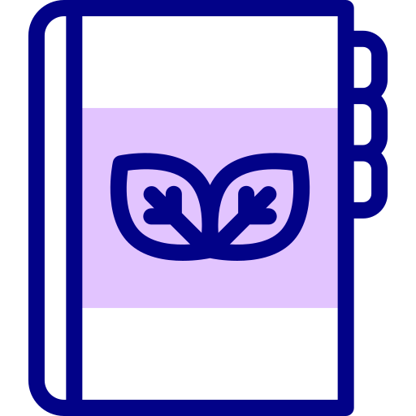
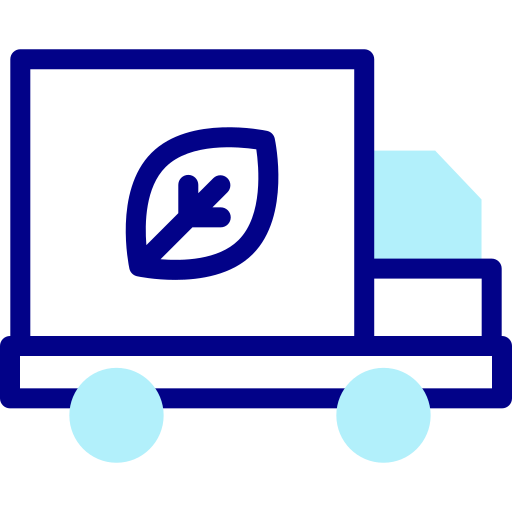

Objetivos
Comunidade
Visamos trazer uma comunidade com trilheiros para esta plataforma. Vocês poderam por suas duvidas a mercer e tambem sanar as duvidas alheias.

Sociedade
A parte mais importante. O foco da plataforma é a socidedade. A facilidade de ajudar qualquer causa em um só lugar de varias formas possiveis.

Educação
Dentre os prêmios que citamos, 2 são relativos a educação e desenvolvimento pessoal. Sem contar a nossa comunidade que agregara com educação com trilheiros.

Logistica
Por darmos a opção de filtro nesta plataforma, fica muito mais facil encontrar trilheiros com o mesmo objetivo,região e personalidade que a sua. Facilitando assim o alinhamento de ideias.